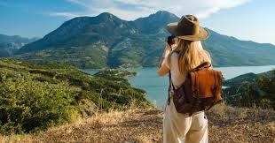

Solo Travellers

Traveling solo can be one of the most rewarding experiences. Here are 15 tips for solo travelers:
- Plan Ahead: Research your destinations and plan your itinerary.
- Stay Connected: Keep in touch with family and friends while traveling.
- Be Cautious: Always stay aware of your surroundings and trust your instincts.
- Travel Light: Pack only what you need to make your journey easier.
- Learn Local Phrases: Knowing a few key phrases can be very helpful.
- Stay in Hostels: A great way to meet fellow travelers.
- Make Copies of Important Documents: Keep copies of your passport and other important documents.
- Use Travel Apps: There are many apps that can help you navigate, translate, and find accommodations.
- Stay Healthy: Take care of your health and stay hydrated.
- Meet Locals: Engage with locals to learn more about the culture.
- Join Group Tours: A safe way to explore and meet new people.
- Be Flexible: Plans can change, so be open to new experiences.
- Have a Backup Plan: Always have a plan B for emergencies.
- Stay Confident: Be confident and assertive in your travels.
- Enjoy Your Own Company: Learn to enjoy being with yourself.
Back to Blogs